比较好的棋子/棋盘BMP图片汇集贴
#1 比较好的棋子/棋盘BMP图片汇集贴 作者：失落刀 发表时间：2009-6-26 23:35:26
如题，鲜花感谢！
欢迎大家共享图片。
#2 Re:比较好的棋子/棋盘BMP图片汇集贴 作者：极地剑客 发表时间：2009-6-26 23:37:56
希望楼主补充图片噢~#3 Re:Re:比较好的棋子/棋盘BMP图片汇集贴 作者：小天元子 发表时间：2009-6-26 23:44:25
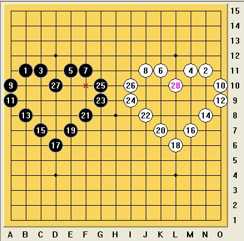
这是我最喜欢的，随着棋盘扩大，棋子还是圆的，还有朦胧美感
［ 掌棋宣传员 于 2010-8-4 15:14:44 时花20金币送鲜花一朵］
#4 Re:比较好的棋子/棋盘BMP图片汇集贴 作者：失落刀 发表时间：2009-6-26 23:54:30
我是说，单个的黑子，单个的白子的BMP图片，好设置进小4的打谱软件2.0版本里面来显示。
棋盘想要木纹的。
#5 Re:比较好的棋子/棋盘BMP图片汇集贴 作者：启蒙 发表时间：2009-6-27 1:24:24
我先来好了，这里面有我从renlib扒下来的棋子BMP，
和一对我很喜欢的围棋子，传统云子很漂亮 PNG格式
［ 失落刀 于 2009-6-27 11:54:07 时花20金币送鲜花一朵］
［ 掌棋宣传员 于 2010-8-4 15:15:02 时花20金币送鲜花一朵］
#6 Re:比较好的棋子/棋盘BMP图片汇集贴 作者：越狱行辕 发表时间：2009-6-27 4:11:44
楼上的。。哎！棋子大小不合适哦#7 Re:比较好的棋子/棋盘BMP图片汇集贴 作者：越狱行辕 发表时间：2009-6-27 4:21:01
PNG修改成BMP了好像 放软件里不显示#8 Re:比较好的棋子/棋盘BMP图片汇集贴 作者：yoda 发表时间：2009-6-27 8:17:30
这个怎么样？BMP的棋子图片显示没有PNG的好，尤其是棋子边缘。

#9 Re:比较好的棋子/棋盘BMP图片汇集贴 作者：撒蓉儿 发表时间：2009-6-27 8:27:26
LS老师图片怎么弄上去的，我不会弄
#10 Re:比较好的棋子/棋盘BMP图片汇集贴 作者：五子天涯 发表时间：2009-6-27 9:10:50


#11 Re:比较好的棋子/棋盘BMP图片汇集贴 作者：撒蓉儿 发表时间：2009-6-27 9:23:40
 图片都没打开呀
图片都没打开呀
#12 Re:比较好的棋子/棋盘BMP图片汇集贴 作者：旅游者 发表时间：2009-6-27 10:22:12
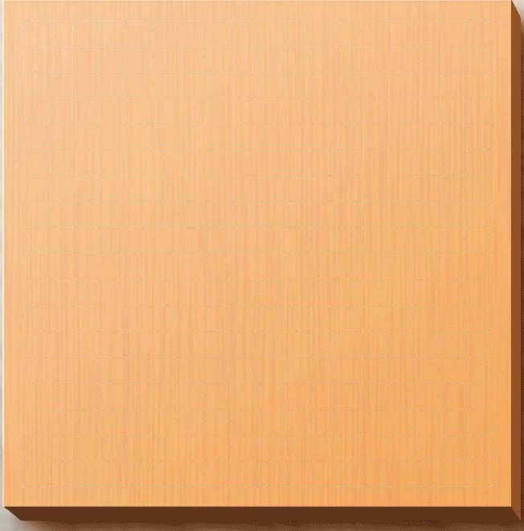#13 Re:Re:比较好的棋子/棋盘BMP图片汇集贴 作者：yoda 发表时间：2009-6-27 11:08:48
设置-盘面显示-背景图片，把压缩包内的图片选上并打勾就行了。
［ 失落刀 于 2009-6-27 11:50:45 时花20金币送鲜花一朵］
#14 Re:比较好的棋子/棋盘BMP图片汇集贴 作者：失落刀 发表时间：2009-6-27 11:40:58
12楼的棋盘依稀可以看到19*19网格？#15 Re:比较好的棋子/棋盘BMP图片汇集贴 作者：失落刀 发表时间：2009-6-27 11:46:21
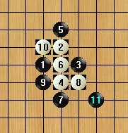
白色棋子有个黑色的背景框。。。尤达老师快来帮忙。
#16 Re:Re:比较好的棋子/棋盘BMP图片汇集贴 作者：yoda 发表时间：2009-6-27 12:19:22
我自己用这套图片没问题，你再试试这两个白子图片看看行不行。
［ 失落刀 于 2009-6-27 12:37:09 时花20金币送鲜花一朵］
#17 Re:Re:比较好的棋子/棋盘BMP图片汇集贴 作者：撒蓉儿 发表时间：2009-6-27 15:28:07
蚕丝棋子
#18 Re:Re:Re:比较好的棋子/棋盘BMP图片汇集贴 作者：撒蓉儿 发表时间：2009-6-27 15:29:02
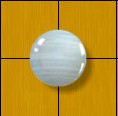 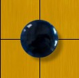
玛瑙棋子
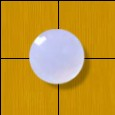 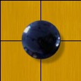
水晶棋子
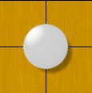 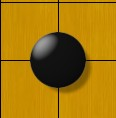
贝壳棋子1
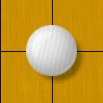 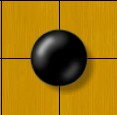
贝壳棋子2
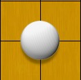 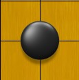
蓉儿最喜欢的磨砂棋子
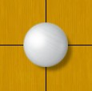 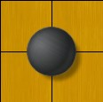
出水芙蓉
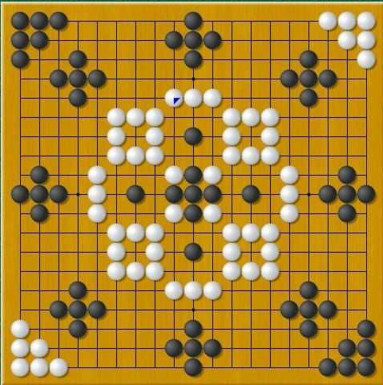［ 失落刀 于 2009-6-27 15:41:55 时花20金币送鲜花一朵］
［ 茗弈小刀 于 2009-6-27 15:44:46 时花20金币送鲜花一朵］
［ 有志青年 于 2009-6-27 19:18:57 时花20金币送鲜花一朵］
#19 Re:比较好的棋子/棋盘BMP图片汇集贴 作者：越狱行辕 发表时间：2009-6-29 6:04:12
谁能帮楼上的图片做 成现成的？我比较笨 弄不好大小#20 Re:比较好的棋子/棋盘BMP图片汇集贴 作者：极地剑客 发表时间：2009-6-29 6:13:38
18楼的棋子很精美~哪里有下载筽~#21 Re:比较好的棋子/棋盘BMP图片汇集贴 作者：uniwin 发表时间：2009-6-29 14:17:57
我喜欢的棋盘与棋子，暗调版本，适用于喜欢暗一点气氛的棋友使用。
本文所载棋盘及棋子由网友“九品守拙”制作完成。
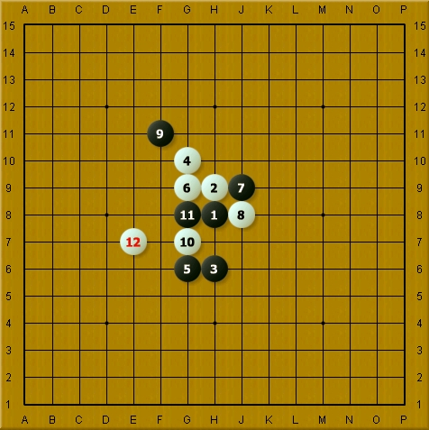
九品守拙原文：
下了很多皮肤均不满意，主要问题是黑子不黑白子不白，打谱时视觉上显得很乱。究其原因，是因为设计者不明白物体的照明和反射原理。
本人是职业摄影师（拍过的电影有《东京审判》等等），对摄影来说，一个简单的事实是：在同样的光的照明下，纯黑色与纯白色用测光表测量数值要相差五档光圈，也就是黑棋子的亮部与白棋子的亮部要相差5档光圈。在现实中，如果主副光有2档光圈的对比度，是一个普通舒适的视觉感受，所以我们设定棋子的明暗对比度为两档光圈。这样的结果就是：黑棋的暗部与白棋的亮部之亮度要相差7档光圈。
这7个基本亮度在Photoshop亮度曲线上的位置的确定方法可以采用数字相机变化曝光的方式测得，在这个基础上本人设计了附件中的棋子。
至于棋子的色彩当然要考虑到画面本身的背景，不用采用简单的黑白，我实验了几种方案，最后确定现在的色彩。
其实如果再仔细弄弄还可以再好些，不过这样也算说的过去了。
需要注意的是，我的显示器经过我严格的调整，能够全部显示256个亮度灰阶，因此我的棋子在大多数人的显示器上会丢失层次——因为大多数人的显示器的反差均高于标准，最黑与最白两头都要丢失层次。但是从工业标准来说，当然仅仅会考虑要让那些标准的显示器显示最佳。
［ 失落刀 于 2009-6-29 19:15:27 时花20金币送鲜花一朵］
哎，大家都期待可以下载这个棋盘和棋子图片呀。
#22 Re:比较好的棋子/棋盘BMP图片汇集贴 作者：越狱行辕 发表时间：2009-6-29 17:28:53
杂都不提供下载呢
#23 Re:比较好的棋子/棋盘BMP图片汇集贴 作者：自来水 发表时间：2009-6-29 17:32:05
顶一个。。。就是不知道怎么用#24 Re:比较好的棋子/棋盘BMP图片汇集贴 作者：极地剑客 发表时间：2009-6-29 18:06:06
很多专业人士噢~评好分提供个下载吧~很多很好看也~#25 Re:比较好的棋子/棋盘BMP图片汇集贴 作者：uniwin 发表时间：2009-6-30 9:04:06
21楼的补充资料：
1、原始的链接在这里http://stonebase.web4chinese.com/bbs/viewtopic.php?t=1500
2、棋盘及棋子的效果图（棋子是云子）

3、更多的漂亮的皮肤在这里：http://www.stonebase.cn/stonebase/chs/index.html
虽然软件不同，但皮肤是可以借鉴、通用的
1）榧木 + 半透玉子 四合一
2）黄花梨木+云子
3）樱桃木 + 云子
4）完美视觉效果皮肤终极版-普通版
5）完美视觉效果皮肤终极版-暗色版
［ 失落刀 于 2009-6-30 18:50:33 时奖励此帖[金币加 20 威望加1］不奖励不足以平民愤。
#26 Re:比较好的棋子/棋盘BMP图片汇集贴 作者：越狱行辕 发表时间：2009-6-30 12:37:42
我就郁闷了 我改完了 在棋盘上杂就不变呢 超级郁闷#27 Re:比较好的棋子/棋盘BMP图片汇集贴 作者：越狱行辕 发表时间：2009-6-30 12:41:26
谁帮我把25 楼的 都弄成BMP的被？我改完后缀成BMP 再用就不显示了
郁闷 里面唯一那个BMP的我能用
#28 Re:比较好的棋子/棋盘BMP图片汇集贴 作者：失落刀 发表时间：2009-6-30 19:36:59
用25楼的棋子转换后如图，棋子有边框，请25楼朋友指教。
#29 Re:比较好的棋子/棋盘BMP图片汇集贴 作者：越狱行辕 发表时间：2009-6-30 19:54:58
可惜了 我那个白字到没边框
但是和28楼黑子 一样 即使使用正常棋子也是这样 可能棋盘的事？
为啥看着就没上面发的爽呢
#30 Re:比较好的棋子/棋盘BMP图片汇集贴 作者：越狱行辕 发表时间：2009-6-30 19:58:48
就意思外面有一圈白的#31 Re:比较好的棋子/棋盘BMP图片汇集贴 作者：失落刀 发表时间：2009-6-30 20:00:44
嗯，25楼的三个**版，，的图片看着非常漂亮。。。
麻烦，25楼朋友帮我们做一些棋盘棋子皮肤吧（BMP格式）。
另外，对对弈图片显示来说，什么格式最好？
鲜花威望金币等着赠送25楼朋友呢！
#32 Re:比较好的棋子/棋盘BMP图片汇集贴 作者：越狱行辕 发表时间：2009-6-30 20:04:30
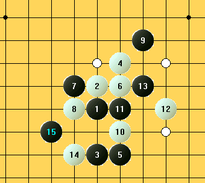#33 Re:比较好的棋子/棋盘BMP图片汇集贴 作者：越狱行辕 发表时间：2009-6-30 20:05:16
这是我改完棋子的样子 就是有一圈白色 。。。好可惜
杂就没25楼看着那么爽呢？
#34 Re:比较好的棋子/棋盘BMP图片汇集贴 作者：uniwin 发表时间：2009-7-1 10:46:32
sorry,我是菜鸟，实在提供不了更多的东西，让大家失望了。不过其他软件的做法可供借鉴，比如有个围棋软件单独提供了皮肤制作程序，供大家自定义棋盘、棋子、明暗度、阴影、背景等内容，然后生成成标准格式的皮肤文件发放给大家使用，然后在打谱软件主程序中调用这个皮肤文件即可。
提供别人制作的皮肤制作文件以供借鉴：
我晕，怎么分卷压缩成每个500k的压缩文件也上传不了呢？哪位版主给我邮箱，我发给版主吧！--已经发给有志同志了，呵呵
［ 旅游者 于 2009-7-1 10:51:55 时花20金币送鲜花一朵］
［ 掌棋宣传员 于 2010-8-4 15:15:31 时花20金币送鲜花一朵］
#35 Re:比较好的棋子/棋盘BMP图片汇集贴 作者：启蒙 发表时间：2009-7-3 18:22:39
从orc提取的棋子加棋盘一份，大家来领饼！
［ 失落刀 于 2009-7-3 19:16:51 时奖励此帖[金币加 20 威望加1］
#36 Re:比较好的棋子/棋盘BMP图片汇集贴 作者：旅游者 发表时间：2009-7-3 22:00:26
 玛瑙.rar
玛瑙.rar
［ 失落刀 于 2009-7-3 22:16:01 时奖励此帖[金币加 20 威望加1］
#37 Re:Re:比较好的棋子/棋盘BMP图片汇集贴 作者：lijeki 发表时间：2009-7-7 15:44:36
云子.rar
［ 失落刀 于 2009-7-7 20:03:57 时奖励此帖[金币加 20 威望加1］
#38 Re:比较好的棋子/棋盘BMP图片汇集贴 作者：越狱行辕 发表时间：2010-3-4 6:48:53
额 有没有棋子 大一点点的？能正好铺棋盘的？现在大家发的棋子普遍小了一些
#39 Re:比较好的棋子/棋盘BMP图片汇集贴 作者：嗯嗯嗯 发表时间：2010-3-4 16:54:00
怎么样
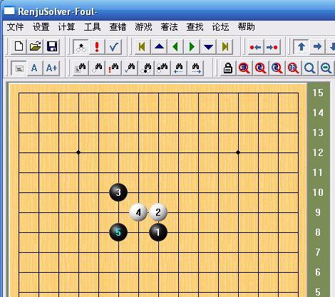#40 Re:比较好的棋子/棋盘BMP图片汇集贴 作者：越狱行辕 发表时间：2010-3-5 21:46:42
有像 哎五子棋打谱软件 自带 棋子那么大的吗？能铺满那种
#41 Re:比较好的棋子/棋盘BMP图片汇集贴 作者：足球赛 发表时间：2010-8-2 10:20:04
失落刀这个怎么样?给个效果图
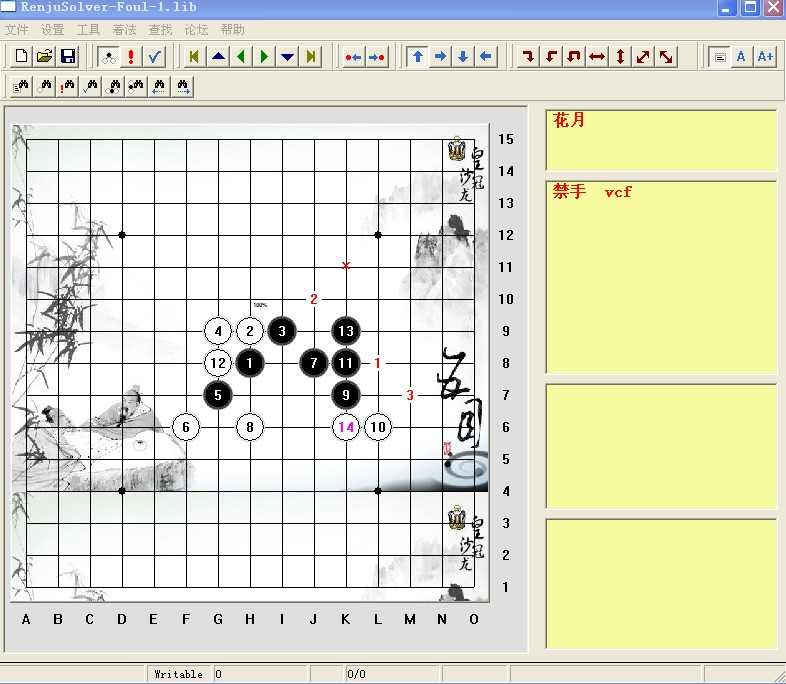#42 Re:Re:比较好的棋子/棋盘BMP图片汇集贴 作者：瞻彼淇奥 发表时间：2010-9-13 14:48:00
风格很好~很有意思~但是感觉这个棋盘棋子对黑棋很不利。。。因为白方的不容易看清的说
#43 Re:比较好的棋子/棋盘BMP图片汇集贴 作者：巫山云雨 发表时间：2010-9-28 11:20:29
呵呵这个有点意思支持